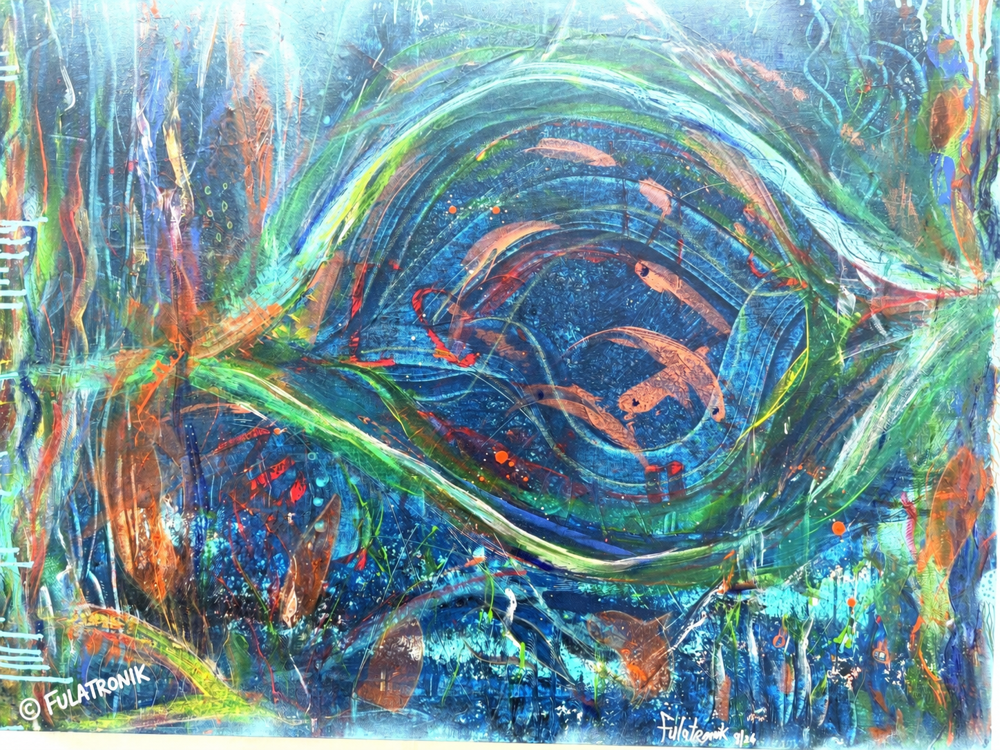
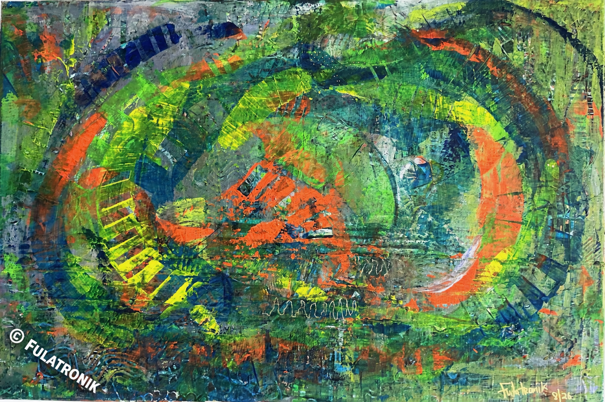
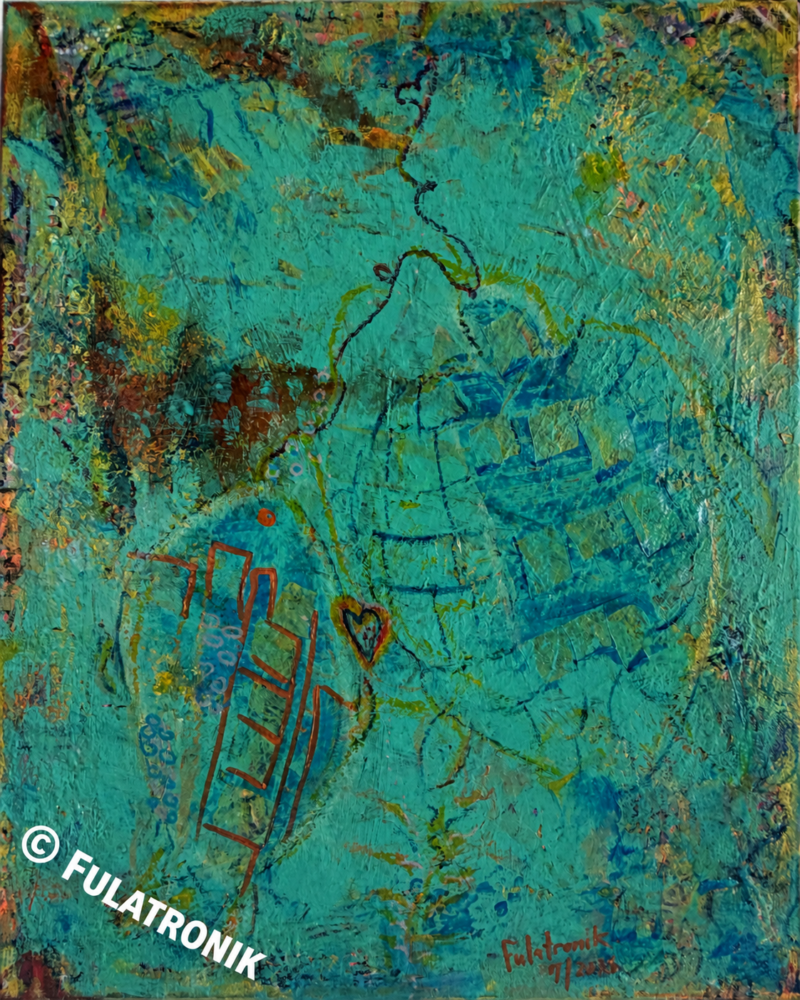

01 / THE WORK / COLLECTION 02
Enter the unexpected soul
Ocean Currents
Movement. Depth. Endless possibility.
Follow the pull of color into a world inspired by the ocean.
THE COLLECTION / THREE ORIGINAL PAINTINGS
Original artworks. One of a kind.

The current between us 2026

Ocean Pulse 2026
